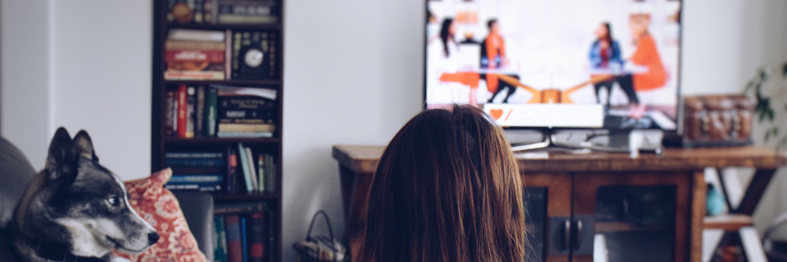
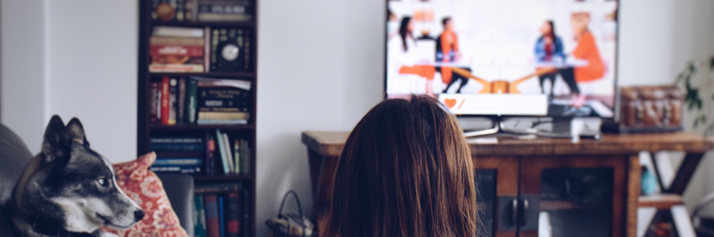

Brief Info About Me!
Hello! My name is Natpatsorn Chokchawanpantawee. I’m currently studying at TUP school, grade 9. On this website, I’d like to share the hobbies I enjoy in my free time. Which are reading books, watching series, and playing games. For me, hobbies are more than just a pastime; they help me feel calm and happy after a long day of studying. They let me relax and unwind, and sometimes they even become a source of new knowledge. That’s why I truly enjoy pursuing my hobbies. If you’re curious, feel free to explore them on this website!My Hobbies
My most favorite hobby now is reading books
Reading books is my favourite hobby because it lets me drift away from stress and dive into new worlds. It calms me after a busy day and gives my mind a healthy workout — sharpening memory and focus. More than entertainment, it’s my way to reset and grow mentally.
Now, I really like to watch C-Drama
Watching series helps me relax and unwind after study or work. I enjoy all kinds, but lately Chinese dramas catch my heart with their stories and atmosphere. It’s not just fun — it’s a nice break that recharges me and gives me peaceful downtime.
My favorite type of game is cozy games
Playing games is how I de-stress and refresh my mind. I love games like Potion Craft because it let me explore, create and challenge myself — all in a fun way. For me, gaming isn’t just play; it’s a way to feel motivated, think sharply, and enjoy a break from everyday routine.